| Name |
Picture |
Description |
Links |
| Seshoeshoe |
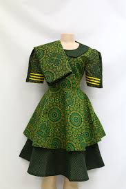 |
Seshoeshoe its traditional women dress that commonly worn in ceremonies. |
Seshoeshoe |
| Mokorotlo |
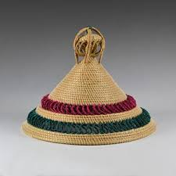 |
Mokorotlo is Basotho hat that protect them from sun's burning.It does not choose gender. |
Mokorotlo |
| Thethana |
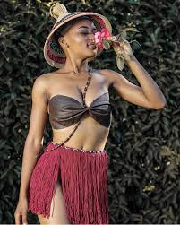 |
It is the underware for ladies that was worn in 1980s.Now they just wear it for showing us how are they proud of their Bosotho. |
Thethana |
| Lifatla |
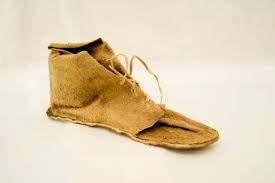 |
Lifatla is basotho shoes made by cattle skin.They make very hard shoes and they look so funny. | http
Lifatla |
| Ts'ea |
|
Ts'ea is worn Basotho man in some ceremonies.They also wear it when their from Initiation school(lebollong). |
Ts'ea |
| Kobo |
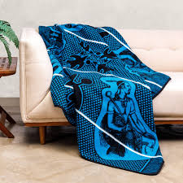 |
Kobo its Basotho blanket that does not choose gender, but its commonly worn by adults when they go to some occations.
Also,they wear it when its frigid or weared by new arrivals from Initiation school. |
Kobo |
| Sefaha |
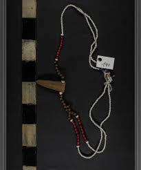 |
Sefaha is worn by everyone who wants.
It has a deep meaning behind because it can be used by Mathuela and to young babies for protectionor or identification of a clan. |
Sefaha |
| Meqathatso |
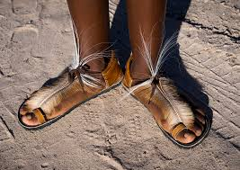 |
Meqathatso is basotho open shoes made by cow's skin, antelope skin or jackal's skin. |
Meqathatso |
| Lebanta |
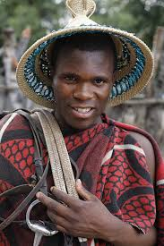 |
Lebanta is basotho beld made by cow's skin.It is the one on the sholder of this man .Its brown or black in colour. |
Beld |
| sefate |
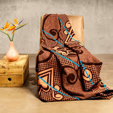 |
An everyday wearing blanket. |
sefate |
| letlama |
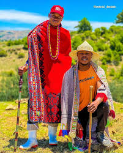 |
a blanket worn by Basotho traditionally intiated men and women. |
letlama |
| Malakabe |
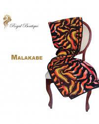 |
the oldest of Basotho blanket brands,this was inspired by a gift given to king Moshoeshoe I by Queen Victoria in the 19 th Century. |
Malakabe |
| kharetsa |
|
named for a type of spiral aloe,this blanket is also popular for its intricate and traditional design. |
kharetsa |
| Poone |
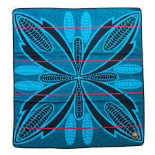 |
this blanket features a corn motif,a symbol of fertility and wealth. |
Poone |
| Motlotlehi |
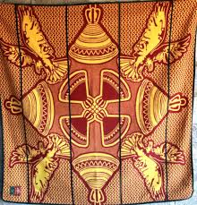 |
a blanket worn by a man on his wedding. |
Motlotlehi |
| serope |
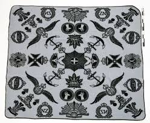 |
a blanket a man presents to his wife when their first child is born. |
serope |
| kobo e ntsho |
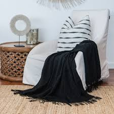 |
a plain black blanket worn by women during periods of mourning. |
kobo e ntsho |
| litata |
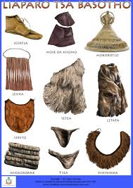 |
a skirt made from cowhide or woven fibre that was hstorically worn by women after coming of age. |
litata |
| ts'ets'e |
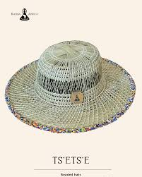 |
another style of traditional headgear made from woven grass . |
ts'ets'e |
| molia-nyeoe |
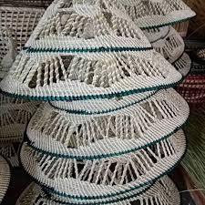 |
a type of traditional headgear for men,also sometimes reffered to as mokorotlo. |
molia-nyeoe |
| majabajaba |
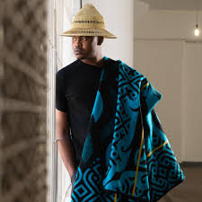 |
the blanket that was designed for expressing love. |
majabajaba |
| mohodu |
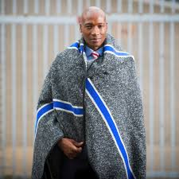 |
one of the oldest Basotho woolen blanket that was designed in 1930s. |
mohodu |
| motlatsi |
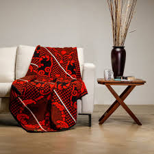 |
a commemorative blanket created to honor the birth of the crown Prince Lerotholi in 2007. |
motlatsi |
| lehlosi |
|
a ceremonial blanket made from the skins of wild cats or leopards and traditionally worn by chiefs. |
lehlosi |
| kuoane |
|
hats historically made from animals skin,with the sekola specifical worn by warriors. |
kuoane |
| lieta tsa letlalo |
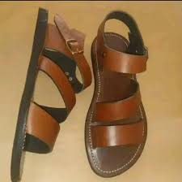 |
handcrafted leather sandlas made from cowhide. |
lieta tsa letlalo |
| tuku |
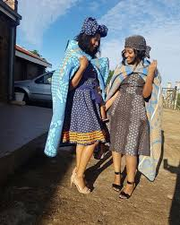 |
a heardscarf that is tied in various intricate styles and is a key part of women's traditional attire. |
tuku |
| thepa |
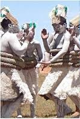 |
a wraparound skirt or apron made from thick,woven materials or colourful cotton. |
thepa |
| beadwork |
 |
beaded necklace and waist beads,with the colors and patterns representing different life stages or clan heritage. |
beadwork |
| lingoetsi |
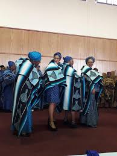 |
a special blanket that is given to a bride. |
lingoetsi |
| sefaha sa letsopa |
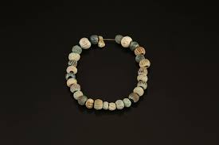 |
a necklace made of clay beads worn by young girls. |
sefaha |
| moholobela |
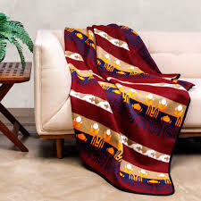 |
a special fertility blanket worn by boys in preparation for circumcision ritual. |
moholobela |
| lekhokolo |
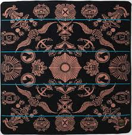 |
a blanket worn by a boy after his initiation ceremony to mark his achievement of manhood. |
lekhokolo |
| topo |
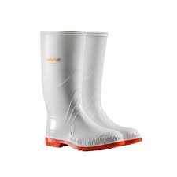 |
large rain boots are worn by herd boys to wade through the muddy mountain terrain. |
topo |
| thulamoya/balaclavas |
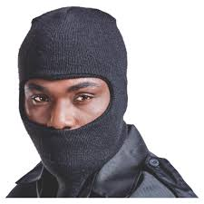 |
a woolen hat that covers all head only leave space for eyes.It worn by herd boys to protect them from the cold mountain winds. |
balaclavas |